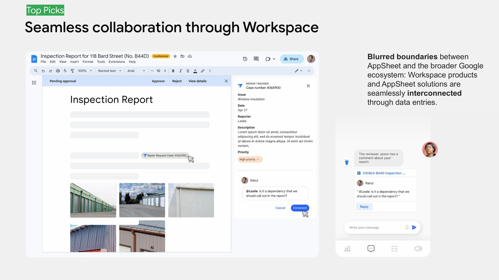
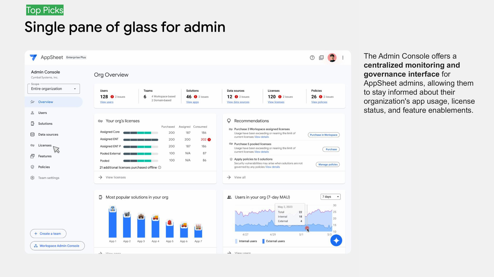

Building a Vision Inside the Ambiguity
AppSheet was mid-transition from a technically-oriented platform to one built for business users, operating without a long-term UX direction to guide the work. I built a high-performing team, initiated a research-backed vision process, and ran a participatory design approach that aligned cross-functional stakeholders around a compelling strategic direction. We stress-tested the concepts with real enterprise customers at Google Cloud NEXT before roadmap planning.
- AI Verbs usage increase
- 200%
- License deal unlocked
- 27K
- Hackathon projects to roadmap
- 7
- Users monetized
- 1M+


